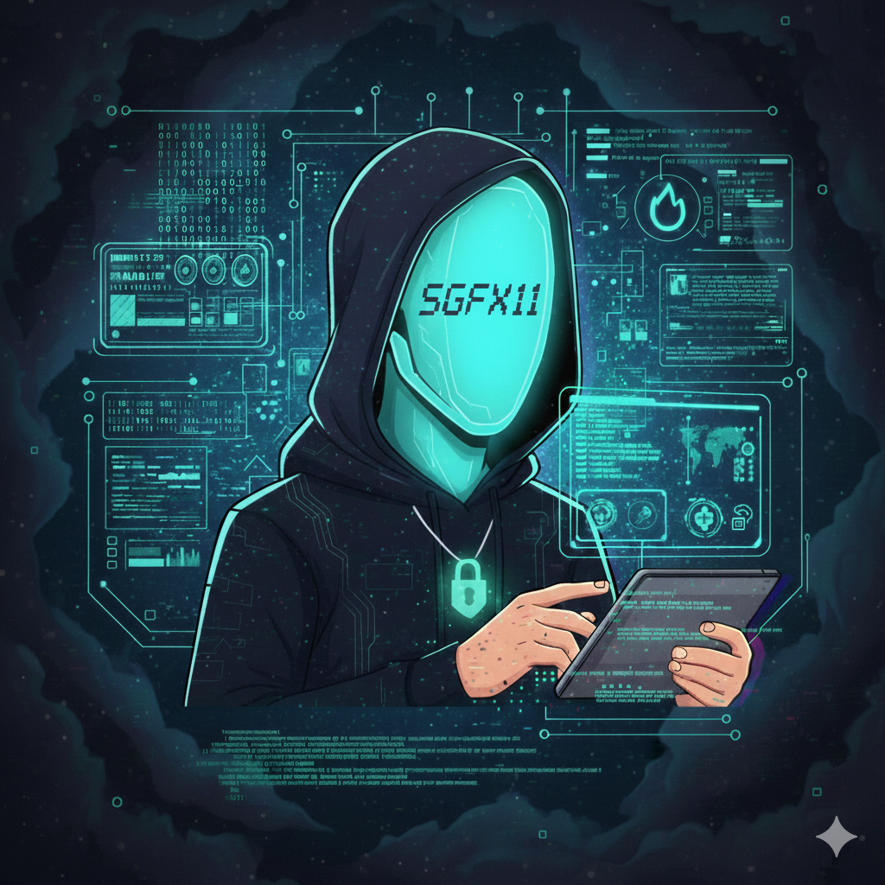
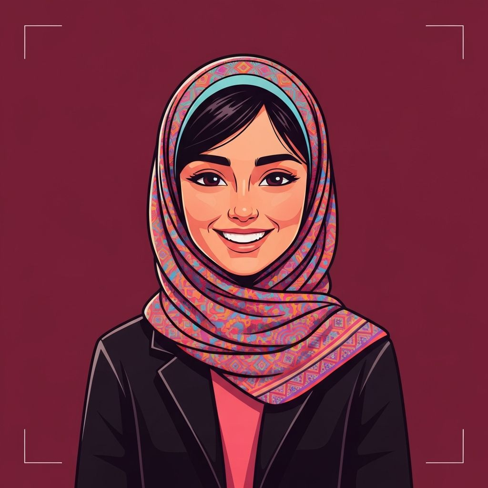
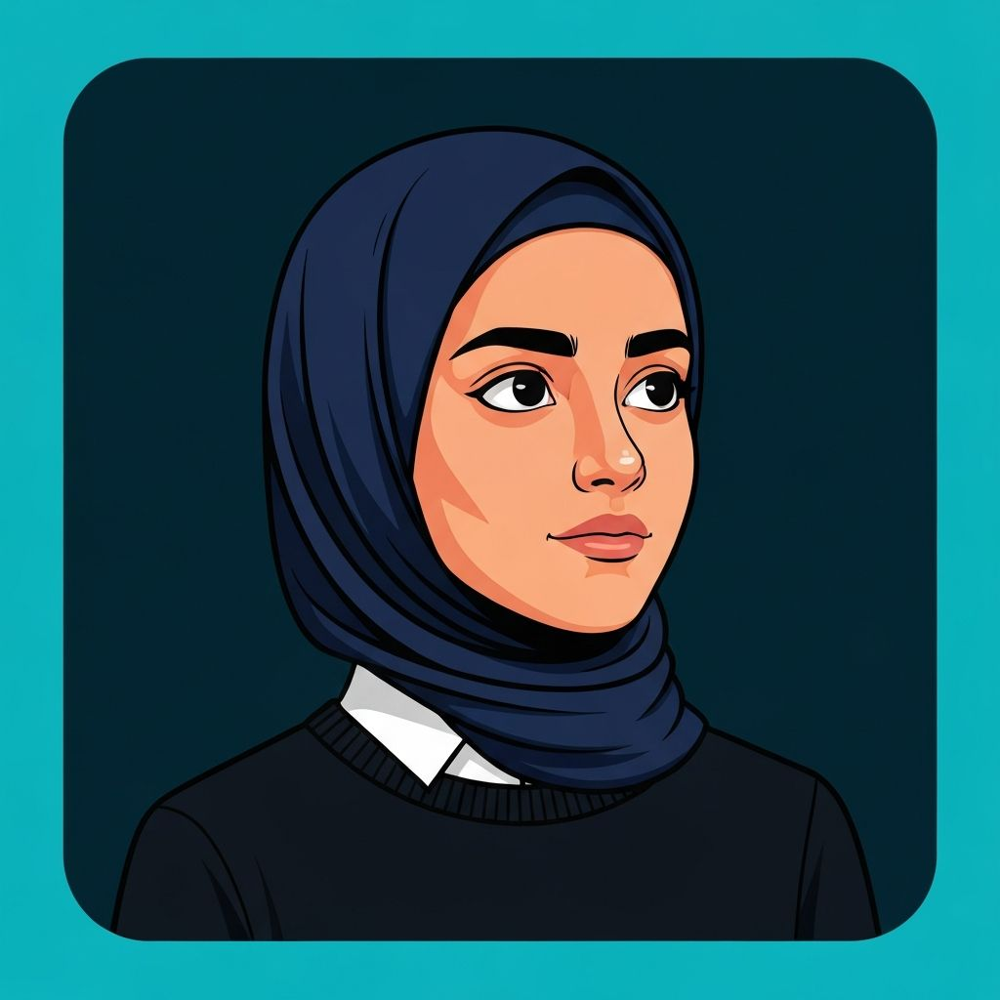
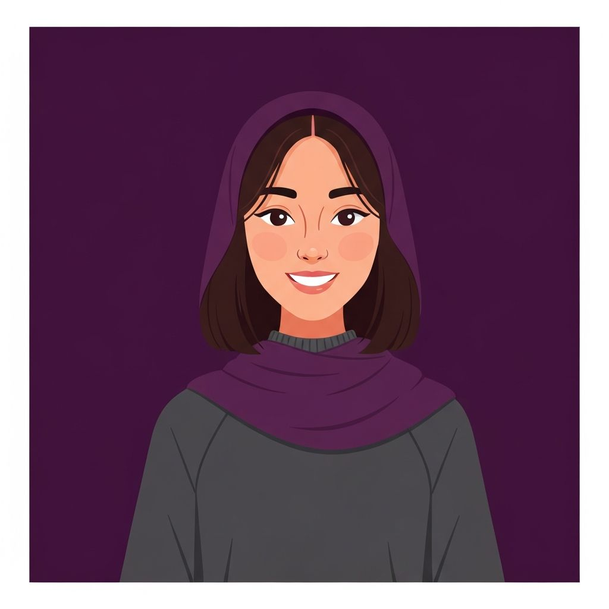
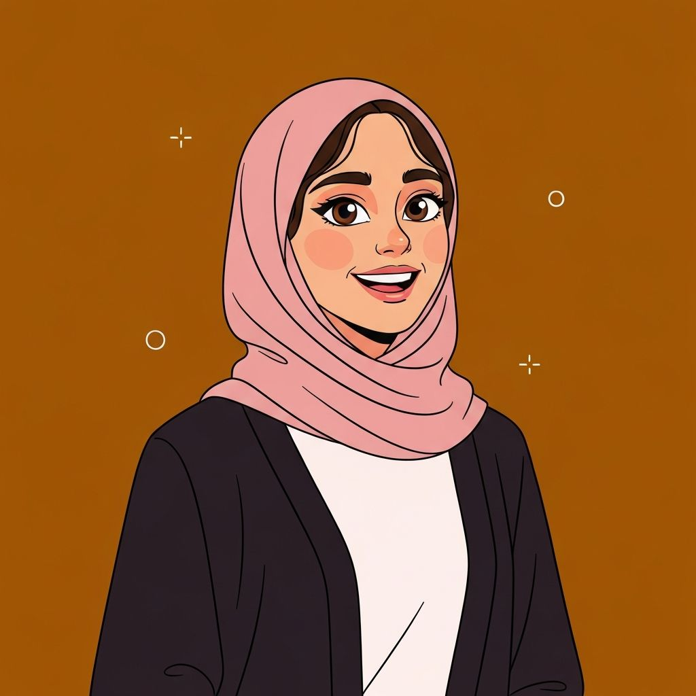

مرحبا بكم في ROOT TEAM
فريق جامعي تقني مختص بمساعدة الطلاب في تعلم الأمن السيبراني والشبكات والبرمجة. نوفر لكم خارطة طريق واضحة ومصادر تعليمية مختارة بعناية لبناء مستقبلكم التقني.
كيف نساعدك
نوفر لطلاب الجامعة مجموعة من الخدمات والمصادر التعليمية لتطوير مهاراتهم التقنية
مصادر تعليمية مختارة
نجمع لكم أفضل الكورسات والمصادر المجانية المنتقاة بعناية لكل مرحلة من مراحل التعلم.
خارطة طريق واضحة
مسار تعليمي منظم خطوة بخطوة من الأساسيات إلى التخصص في الأمن السيبراني.
مجتمع طلابي
انضم لمجتمع من الطلاب المتحمسين للتقنية وتبادل المعرفة والخبرات.
ورش عمل ولقاءات
جلسات تعليمية وتطبيقية دورية يقدمها أعضاء الفريق لمساعدة الطلاب عمليا.
تعلم البرمجة
مصادر لتعلم Python وأساسيات البرمجة وهياكل البيانات والخوارزميات.
دعم مستمر
فريقنا متاح دائما للإجابة على استفساراتكم وتوجيهكم في رحلتكم التعليمية.
الخارطة الشجرية للمسار

خارطة الطريق
خطوات واضحة ومنهجية لاحتراف الأمن السيبراني - اضغط على أي رابط للبدء بالتعلم
الشبكات - Networking
ابدأ بفهم أساسيات الشبكات وبروتوكولاتها. هذا هو الأساس الذي يبنى عليه كل شيء في عالم الأمن السيبراني.
أساسيات الأمن - Security+
تعلم مفاهيم أمن المعلومات الأساسية والتشفير وإدارة المخاطر من خلال منهج CompTIA Security+.
نظام لينكس - Linux
إتقان سطر الأوامر في Linux هو مهارة أساسية لأي متخصص في الأمن السيبراني. تعلم الأوامر والإدارة والتطبيق العملي.
أساسيات ويندوز - Windows
فهم نظام Windows وأمنه وإدارته مهم جدا لأن معظم الشركات تستخدمه كنظام أساسي.
البرمجة بـ Python
Python هي اللغة الأساسية في عالم الأمن السيبراني. تعلمها يمكنك من كتابة أدوات وسكربتات أمنية.
هياكل البيانات والخوارزميات
فهم الخوارزميات وهياكل البيانات يعزز تفكيرك البرمجي ويساعدك في حل المشاكل المعقدة.
مقدمة في الأمن السيبراني
بعد بناء الأساسيات القوية، ادخل عالم الأمن السيبراني بشكل متخصص من خلال دورات أكاديمية معتمدة.
تعرف على الفريق
مجموعة من الطلاب المتحمسين الذين يعملون معا لمساعدة زملائهم
ابراهيم محمود علي
مؤسس ورئيس الفريق
احمد ابوغيث
اللجنة القيادية التأسيسية
بتول محمد
اللجنة القيادية التأسيسية
زين محمد
اللجنة القيادية التأسيسية
سلمى خليل
اللجنة القيادية التأسيسيةيوسف موسى
اللجنة القيادية التأسيسية
روعة سالم
اللجنة القيادية التأسيسيةمن نحن
فريق جامعي طلابي من جامعة الحسين بن طلال
رؤيتنا
نحن فريق ROOT TEAM، مجموعة من طلاب جامعة الحسين بن طلال (AHU) المتحمسين للتقنية والأمن السيبراني. نسعى لبناء مجتمع طلابي يدعم بعضه البعض في رحلة التعلم التقني.
هدفنا هو مساعدة زملائنا الطلاب من خلال توفير مصادر تعليمية مختارة بعناية وخارطة طريق واضحة ومجتمع داعم للتعلم والتطور.
التعليم الجامعي
نكمل المسيرة الأكاديمية بمصادر عملية وتطبيقية
العمل الجماعي
نؤمن بقوة الفريق والتعاون المستمر بين الطلاب
التعلم المستمر
نسعى دائما لتطوير مهاراتنا ومشاركة المعرفة مع الجميع